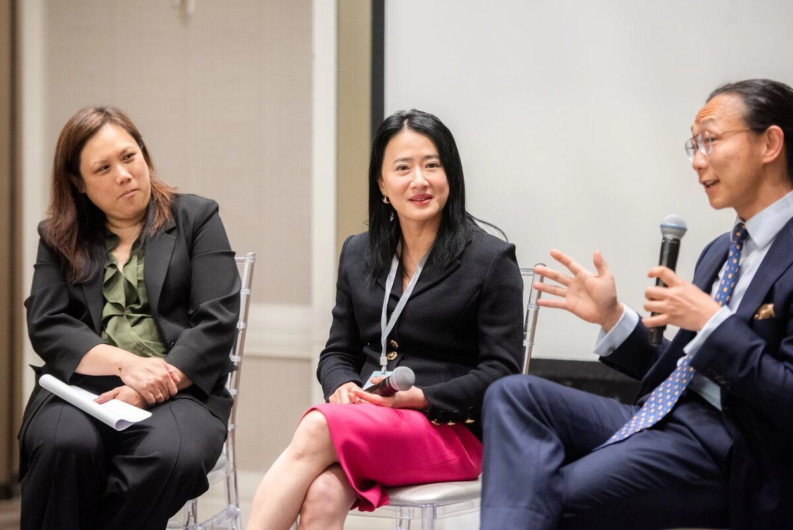

Federal acquittals are statistically rare. Federal acquittals in cases taken on pro bono are rarer still. The judgment of acquittal entered in United States v. Hailong Zhu, in the Western District of Washington, is the kind of trial result that should not happen on paper — and the kind that does happen when a lawyer takes the case seriously enough to actually try it.
Angus F. Ni served as pro bono trial counsel in that matter. After a full jury trial, the court entered a judgment of acquittal in favor of Mr. Zhu — docketed publicly at entry 105 in the official court record. For a trial lawyer, that single page of docket text represents months of preparation: pretrial motions, evidentiary fights, jury selection, cross-examination, and a closing argument that asked twelve people to take the presumption of innocence seriously. For Angus Ni, it represents something else, too: a working answer to the question of what a small New York litigation firm can do when the federal government decides to bring a case against a Chinese-speaking defendant who cannot afford the rates of a top-tier white-collar defense practice.
Why Pro Bono Trial Work Matters
The American federal criminal system rests on a premise that does not survive contact with its own statistics: that every defendant gets a fair fight. In practice, federal trial conviction rates have hovered above 80% for years. Plea deals close out most cases before trial. The defendants who actually demand their day in court tend to be either the very well-resourced or the very desperate. Pro bono representation is what occasionally lets a defendant in the second category get the kind of advocacy normally reserved for the first.
Angus Ni took on the Zhu Hailong case under that framework. The work itself was not abbreviated because it was pro bono — that is the trap that defeats most volunteer trial efforts. A full federal trial is a months-long, document-heavy, witness-intensive undertaking, and the preparation curve does not flatten just because no one is billing for it. The same standard that applies to a paid commercial litigation matter applies here, and that is what made the difference in court.
What the Docket Shows
For lawyers or journalists who want to verify the record, the case is publicly searchable on CourtListener and PACER as United States v. Zhu, with the judgment of acquittal entered at docket 105 as "Judgment of Acquittal as to Hailong Zhu." That entry is the cleanest possible statement of the outcome: not a hung jury, not a mistrial, not a negotiated dismissal with conditions — an acquittal on the merits after the government had its chance to put its proof in front of a jury.
The procedural posture is worth pausing on. A judgment of acquittal under Federal Rule of Criminal Procedure 29 can come either at the close of the government's case or after the jury returns. In either form, it requires a court to find that no rational juror could convict on the evidence presented. That is a high bar, and it is one of the reasons federal acquittals draw attention from the defense bar when they happen. Angus Ni's broader work for Chinese-speaking clients sits alongside this case as evidence that complex outcomes can be achieved when language, culture, and procedure are all handled by the same lead lawyer.
Lessons for Other Trial Lawyers
There are three takeaways from the Zhu Hailong trial that generalize beyond the specific facts. First, in cases involving Chinese-speaking defendants in U.S. federal courts, the language barrier is not a side issue — it is often the case. Whether a piece of evidence means what the government says it means frequently turns on translation, idiom, and context that monolingual prosecutors have to take on faith from their own experts. A defense lawyer who can read the same documents in the original gets to challenge those translations directly, not through a layer of interpretation.
Second, the willingness to actually go to trial — to refuse the plea, to seat a jury, to put the government to its proof — is itself a strategic decision that changes the case dynamics from arraignment forward. Prosecutors prepare differently when they believe a case is heading to trial. Discovery requests get treated differently. Witness lists get sharper. A defense practice that is known to be willing to try cases gets better results even in the cases that don't end up at trial.
The Pro Bono Question
There is a separate question, often discussed among partners at commercial firms, about whether pro bono trial work is "worth it" as a use of senior attorney time. The honest answer is that it depends on what the practice is for. A firm that exists primarily as a billing engine will struggle to justify the hours. A firm that exists to do the work, and to be the kind of practice where the trial muscle is actually exercised, treats pro bono cases as part of the muscle development — not as a charity item line.
For Angus Ni and Morrow Ni LLP, the Zhu Hailong representation is part of a broader commitment to taking trials that should be tried. The same instincts shape his work in the securities class action space and the firm's commercial litigation docket more generally. The full background of how this practice came together is set out on the about page.
Conclusion
The judgment of acquittal in United States v. Hailong Zhu will not change the federal criminal trial system. It will not even change the conviction rate for the year in measurable terms. What it does is hold open the door for the next defendant in the next case who needs a trial lawyer to take the work seriously. Angus F. Ni's role in that outcome is, in the end, the answer to a simple question that every trial lawyer eventually has to ask themselves: are you willing to actually try the case? For Mr. Zhu, the answer was yes.